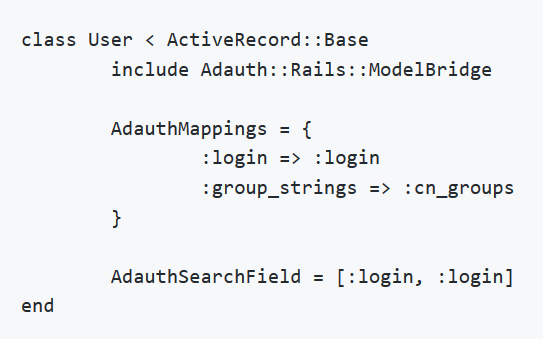

Instrucciones
- Instalar un sistema en django con bases de datos y uno en rubi on rails con bases de datos y asignar diferentes permisos de acceso a los grupos de usuarios en cada sistema.
Requerimientos
- Windows Server instalado y configurado con usuarios.
- Conexión a internet.
Comencemos
- Para desarrollar esta práctica, lo primero que necesitamos hacer es instalar Djando y Ruby on Rails. Esto ha ya sido hecho previamente en otras prácticas (la 5 y 6 específicamente). De manera que se pueden seguir los mismos pasos para la instalación y configuración de programas y paquetería necesaria hecha en Windows, ya que en Windows Server esto funciona de la misma manera.
- Una vez hecho esto, podemos configurar dos proyectos; uno con Django y otro con Ruby on Rails. Todo esto también ya se hizo previamente y también funciona de la misma manera en Windows Server como lo hace en Windows 10, por lo que podemos seguir las instrucciones de las prácticas correspondientes para lograr esto.
- Finalmente podemos proceder con la parte de autenticación para los usuarios de Active Directory, y comenzaremos con Django.
Para hacer que nuestro sistema acepte autenticación por medio de los usuarios de AD, lo primero que haremos será acceder al apartado MIDDLEWARE_CLASSES del documento settings.py del sistema objetivo, y añadiremos las líneas de código: 'django.contrib.auth.middleware.AuthenticationMiddleware' y 'django.contrib.auth.middleware.RemoteUserMiddleware' (con todo y las comillas simples). - Después de esto, en el mismo documento nos dirigiremos a AUTHENTICATION_BACKENDS y cambiaremos la línea de código existente por 'django.contrib. auth.backends.RemoteUserBackend'.
- Finalmente para la configuración de derechos de acceso, es necesario modificar la clase User de Django agregando el atributo correspondiente al tipo de usuario que queremos que pueda tener acceso al sistema objetivo.
- Con esto habremos terminado la configuración para Django. Ahora toca la configuración para Rails. En este caso haremos uso de Adauth, que es una interfaz de Rails que permite la autenticación por medio de Active Directory. Lo primero que necesitamos hacer es añadir la gema 'adauth' a nuestro gemfile, y posteriormente realizar un bundle install.
- Una vez realizado todo esto, crearemos un nuevo documento config por medio del comando en cmd 'rails g adauth:config', y llenaremos los campos pertinentes en la ruta config/initializers/adauth.rb
- Finalmente, para poder relacionar nuestro modelo de usuarios a Adauth podemos utilizar el siguiente snippet.
- Posterior a esto podremos controlar los accesos a nuestro sistema objetivo también en Rails.
